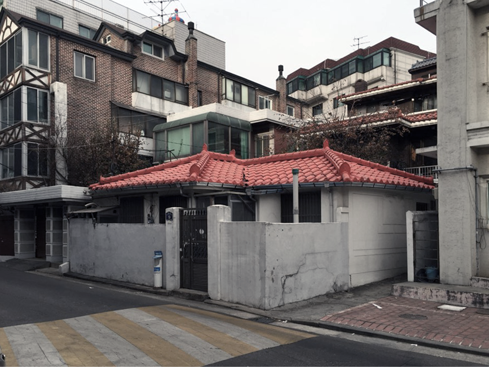
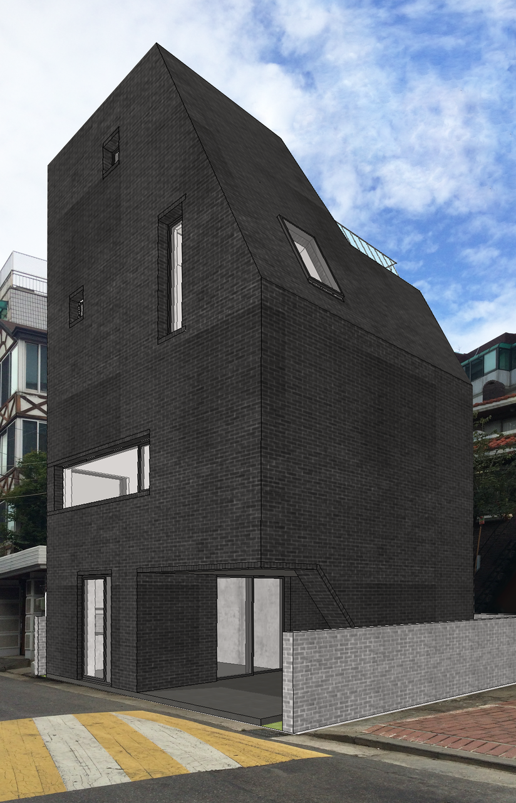

Catégorie_Architecture, Maison construite
Lieu_ Séoul, Corée du Sud
Temps du projet_2015-2016
Participation à tous les affaires (design, contrôle des travaux)_dans “B.U.S Architecture”
Comme la plupart de la population active a déménagé à la capitale, la valeur foncière de Séoul est montée en flèche. De plus, les consommateurs ont tendance à préférer les immeubles de grande hauteur aux maisons unifamiliales. Les appartements sont faciles à gérer et faciles à vendre à l'avenir. Pour les vieilles générations, le but d’investissement de l’appartement était supérieur au but de la résidence. Mais pour les jeunes ces jours-ci, le logement est une autre valeur à abandonner. Même s’ils économisent de l’argent plus de 10 ans, ils ne peuvent pas acheter un bon appartement à Séoul. Avec cet argent, de plus en plus de jeunes couples espèrent plutôt construire un très petit bâtiment. Une vraie maison qui les réconforte épuisés. Ne pas créer une produit pour ventre mais une maison leur adaptée.

